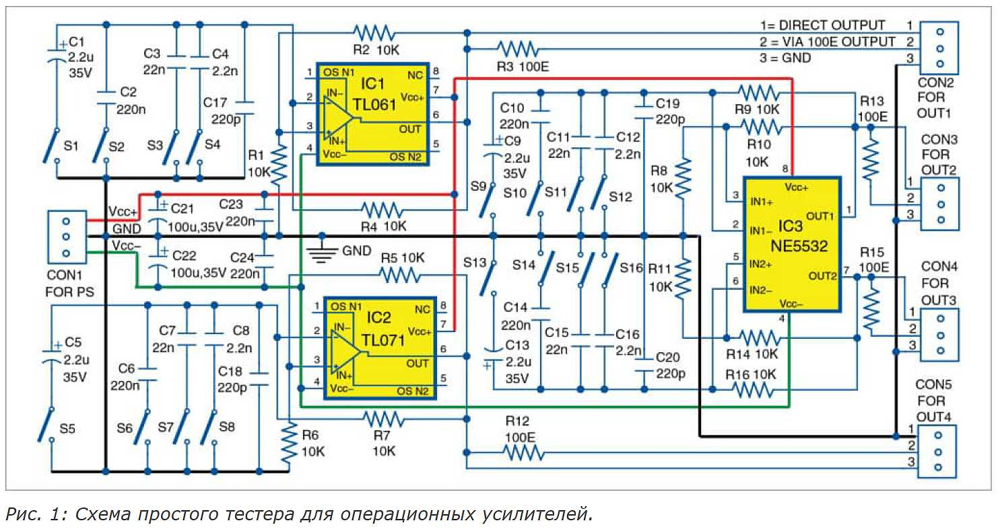
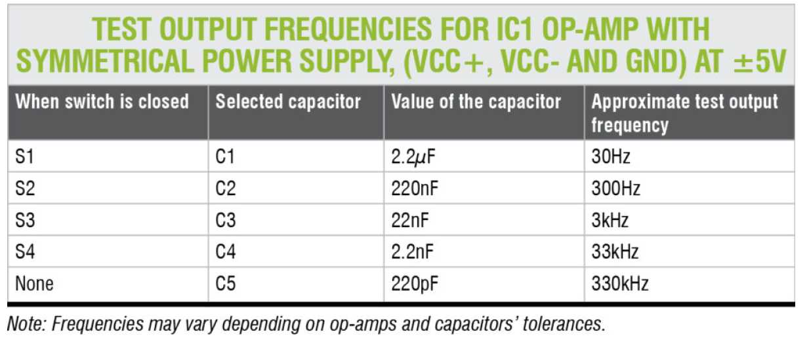
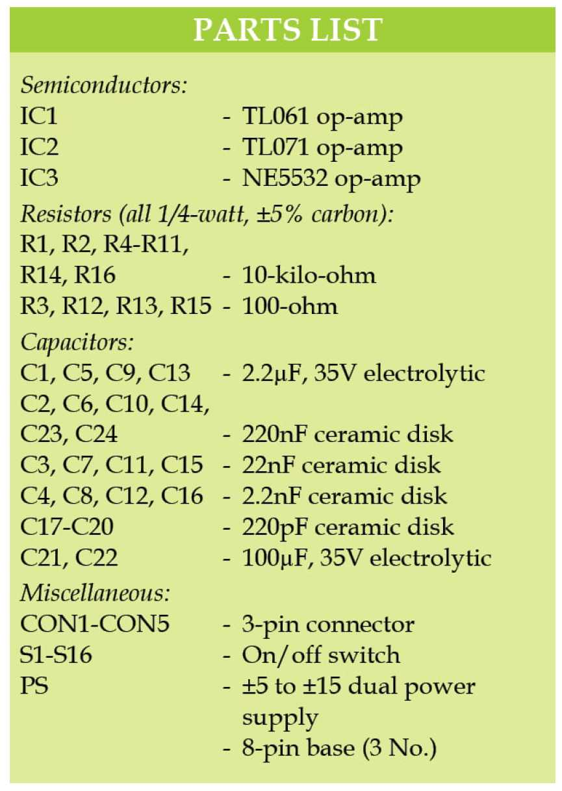
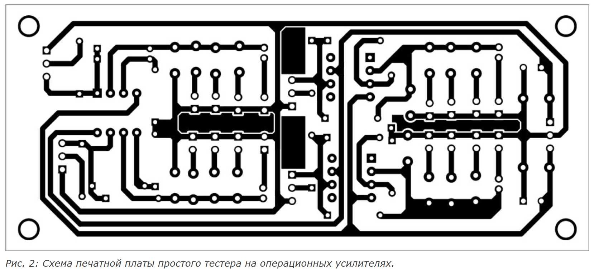
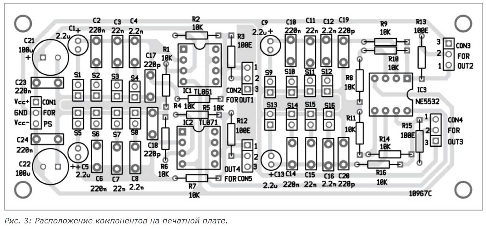

<style>
  :root{
    --accent:#0d63a8;
    --accent-dark:#0a4d82;
    --text:#2a3540;
    --muted:#6b7a89;
    --bg:#f2f5f8;
    --card:#ffffff;
    --border:#dfe6ec;
  }
  *{box-sizing:border-box;}
  article {
    margin:0;
    font-family:"Segoe UI",Roboto,Arial,sans-serif;
    background:var(--bg);
    color:var(--text);
    line-height:1.75;
  }
  article{
    max-width:840px;
    margin:32px auto;
    background:var(--card);
    border:1px solid var(--border);
    border-radius:10px;
    padding:42px 52px;
    box-shadow:0 4px 18px rgba(30,50,70,.08);
  }
  header h1{
    color:var(--accent-dark);
    font-size:1.9em;
    line-height:1.3;
    margin-bottom:6px;
  }
  .author{
    color:var(--muted);
    font-style:italic;
    margin:0 0 2px;
  }
  .date{
    color:var(--muted);
    font-size:.92em;
    margin:0 0 26px;
  }
  h2{
    color:var(--accent-dark);
    border-left:4px solid var(--accent);
    padding-left:12px;
    margin-top:36px;
    font-size:1.3em;
  }
  a{color:var(--accent);}
  a:hover{color:var(--accent-dark);}
  figure{
  margin:28px 0;
}
figure img{
  display:block;
  width:100%;          /* картинка тянется на всю ширину контейнера */
  height:auto;         /* высота подстраивается пропорционально */
  max-width:100%;
  border:1px solid var(--border);
  border-radius:8px;
  background:#f7fafc;
  box-shadow:0 2px 8px rgba(30,50,70,.06);
}
figcaption{
  margin-top:8px;
  font-size:.9em;
  color:var(--muted);
  text-align:center;
  font-style:italic;
}
  .tags{
    margin-top:36px;
    padding-top:14px;
    border-top:1px solid var(--border);
    font-size:.9em;
    color:var(--muted);
  }
  .tags span{
    display:inline-block;
    background:#e8f0f8;
    color:var(--accent-dark);
    border-radius:14px;
    padding:2px 12px;
    margin-left:6px;
  }
  .bio{
    margin-top:26px;
    background:#f7fafc;
    border-left:4px solid var(--accent);
    border-radius:0 8px 8px 0;
    padding:16px 20px;
    font-size:.95em;
  }
  .bio strong{color:var(--accent-dark);}
  @media (max-width:700px){
    article{padding:26px 20px;margin:12px;}
  }
</style>

<article>

  <header>
    <h1>Сделайте этот простой тестер для операционных усилителей</h1>
    <p class="author">Петре Петров, ассистент-профессор, Технический университет Софии</p>
    <p class="date">4 октября 2019 г.</p>
  </header>

  <p>Это простой тестер с генератором прямоугольных импульсов для одиночных и сдвоенных операционных усилителей (ОУ). Такие ОУ широко применяются в различных проектах. Их можно использовать многократно, но перед применением в новых и других проектах ОУ зачастую необходимо протестировать.</p>

  <p>Существует множество одиночных ОУ под различными названиями, такими как NE5534, TL071 и LM741, каждый из которых имеет существенные различия по скорости нарастания выходного напряжения, нагрузочной способности выхода и другим параметрам. Чтобы выбрать наиболее подходящий для вашего применения, эти параметры необходимо сравнивать. Ниже представлена простая схема тестера ОУ, разработанная для решения этих задач.</p>

  <h2>Схема и принцип работы</h2>

  <p>Принципиальная схема простого тестера операционных усилителей показана на рис.&nbsp;1. Она построена на одиночных ОУ TL061 (IC1) и TL071 (IC2), сдвоенном ОУ NE5532 (IC3), шестнадцати переключателях включения/выключения (S1–S16) и нескольких других компонентах.</p>

<figure>
  
  <figcaption>Рис. 1: Принципиальная схема простого тестера ОУ</figcaption>
</figure>


  <p>Эта схема позволяет очень удобно тестировать два одиночных ОУ (IC1 и IC2) и один сдвоенный ОУ (IC3). Иногда трудно решить, что использовать в проекте: два одиночных ОУ или один сдвоенный. В этом случае необходимо сравнить параметры двух одиночных ОУ с параметрами сдвоенного. IC1 и IC2, а также IC3 могут быть одного типа — например, NE5534 и NE5532 соответственно.</p>

  <p>Схема формирует пять тестовых выходных частот при выборе переключателей S1–S4. Тестовые выходные частоты для IC1 приведены в таблице на следующей странице. Для тестирования IC2 используйте переключатели S5–S8, а для тестирования IC3 — S9–S16. Для IC2 и IC3 тестовые частоты могут быть теми же.</p>

  <p>IC3 можно тестировать на тех же или на других частотах. Поскольку IC3 — сдвоенный ОУ, возможны случаи, когда один из встроенных ОУ исправен, а другой повреждён, и наоборот. (Обратите внимание: если ОУ повреждён, вы не получите выходные частоты, указанные в таблице.)</p>

  <p>Схема работает от двухполярного источника питания, при этом IC1, IC2 и IC3 подключены к общим шинам питания. Питание может быть симметричным или несимметричным — это изменит параметры выходных сигналов. Схема работает во всём диапазоне напряжений питания ОУ. Максимальное напряжение питания ограничивается возможностями ОУ, максимальным номинальным напряжением конденсаторов, применяемых в схеме тестера, и нагрузочной способностью ОУ.</p>

  <p>Выходную частоту тестов можно легко изменять в широких пределах в зависимости от потребностей. Нагрузочную способность ОУ можно проверять с помощью внешних нагрузок. Для этого у каждого тестируемого ОУ имеется как прямой выход, так и выход с последовательным резистором сопротивлением 100&nbsp;Ом. При непосредственном тестировании с ёмкостными и индуктивными нагрузками ОУ работают неустойчиво, поэтому на выходах предусмотрены резисторы 100&nbsp;Ом.</p>

  <p>Схема не требует никакой настройки для правильной работы. Её можно использовать для тестирования многих ОУ — от низкоскоростных, таких как LM741 и MC1458, до более быстрых, таких как OPA132 и OPA134.</p>
<figure>
  
</figure>
  <h2>Перечень элементов простого тестера операционных усилителей</h2>
<figure>
  
</figure>
  <h2>Конструкция и тестирование</h2>

  <p>Разводка печатной платы простого тестера одиночных и сдвоенных ОУ в натуральную величину показана на рис.&nbsp;2, а расположение компонентов — на рис.&nbsp;3. Соберите схему на разработанной печатной плате. Подключите подходящий двухполярный источник питания (ИП) к разъёму CON1. Подключите все переключатели (S1–S16) к передней панели корпуса для выбора нужной частоты, как показано в таблице.</p>

<figure>
  
  <figcaption>Рис. 2: Разводка печатной платы простого тестера ОУ</figcaption>
</figure>

<figure>
  
  <figcaption>Рис. 3: Расположение компонентов на печатной плате</figcaption>
</figure>
  <p>Скачать PDF-файлы с разводкой платы и расположением компонентов: <a href="img_5/Simple-Tester-for-Operational-Amplifiers.zip">нажмите здесь</a></p>

  <p>Рекомендуется использовать панели (розетки) для микросхем IC1, IC2 и IC3, чтобы их можно было легко устанавливать и извлекать.</p>

  <p class="tags">Теги:<span>Июль 2019</span></p>

  <div class="bio">
    <strong>Петре Петров, ассистент-профессор, Технический университет Софии</strong><br>
    Петре Цв. Петров — научный сотрудник и ассистент-профессор Технического университета Софии (Болгария), приглашённый лектор-эксперт в OFPPT (Касабланка, Королевство Марокко). В настоящее время работает инженером-электронщиком в частном секторе в Болгарии.
  </div>

</article>
